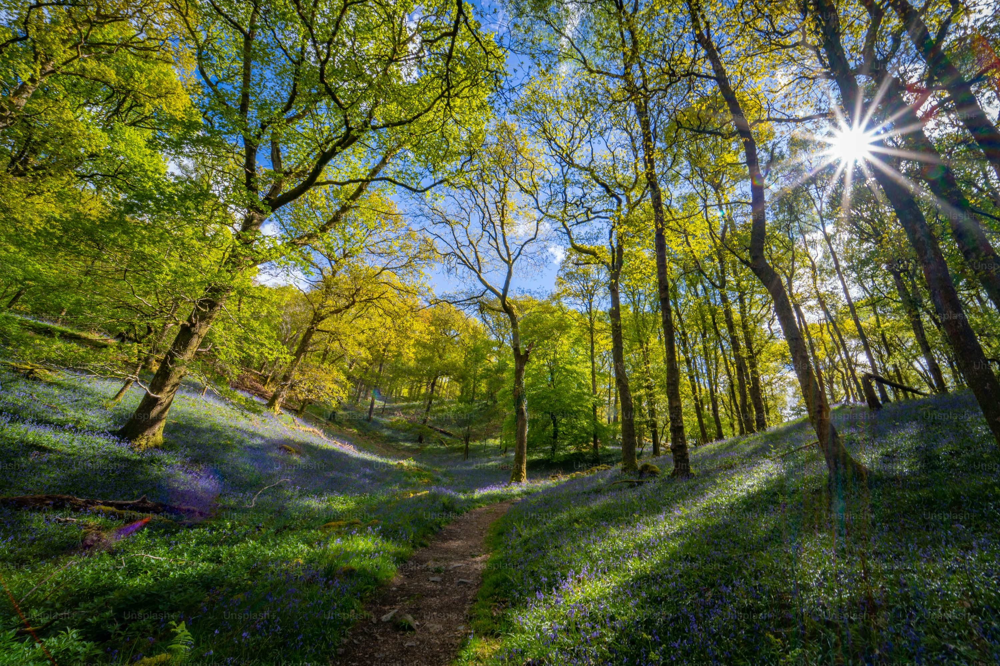

Onde existe a conexão da cidade e o campo.
Estilo Urbano: A Batida da Vida Moderna
Vibre com a energia contagiante da cidade, onde a arquitetura grandiosa se une ao ritmo vibrante das celebrações urbanas. .

Arquitetura Minimalista
Linhas limpas e design inovador definem o horizonte das grandes cidades.
Acesso a serviços e infraestrutura
Educação, saúde, transporte público, lazer, segurança.
Arte e Cultura Contemplativa
Museus e galerias que abrigam obras que inspiram a reflexão e o deleite.
Natureza Serena: O Ritmo do Campo
Mergulhe na tranquilidade dos campos, onde o tempo flui em harmonia com o ambiente.

Contato direto com a natureza:
ar puro, paisagens naturais, tranquilidade e ritmo mais calmo..
Alimentação mais saudável
Acesso a alimentos frescos, orgânicos e produzidos localmente.
Autossuficiência e simplicidade
Estilo de vida mais sustentável, com foco no essencial..
Interdependência dos espaços geográficos
Uma análise das características que definem e unem esses dois mundos distintos.
| Aspecto | Urbano | Rural |
|---|---|---|
| Estilo de Vida | A cidade fornece ao campo bens industrializados, tecnologia e serviços essenciais. | O campo abastece a cidade com alimentos, matérias-primas e energia |
| Ambiente | A cidade impacta o meio rural com poluição e consumo, mas também oferece tecnologias para conservação ambiental. | O campo preserva recursos naturais essenciais, como água e ar puro, que beneficiam a cidade. |
| Experiências | A cidade proporciona ao campo acesso a cultura, tecnologia e novas formas de entretenimento. | O campo oferece à cidade experiências ligadas à natureza, tranquilidade e tradições culturais. |